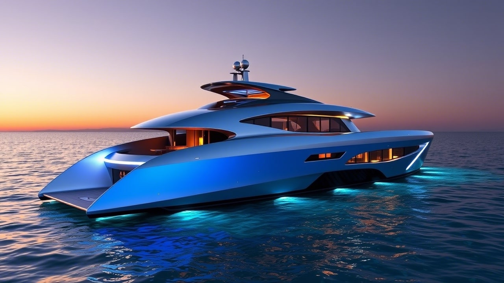

Conheça Nossos Modelos
Aether X
O hatch compacto que redefine o conceito de mobilidade marítima inteligente. Com design minimalista e tecnologia de ponta, o Aether X é ideal para quem busca performance e elegância em qualquer tipo de navegação.
Vega Z

Um hatch gigante de última geração, projetado para clientes que buscam o topo do topo. O Vega Z oferece um interior personalizável, automação completa e um nível de conforto sem precedentes, mesmo nas longas navegações.